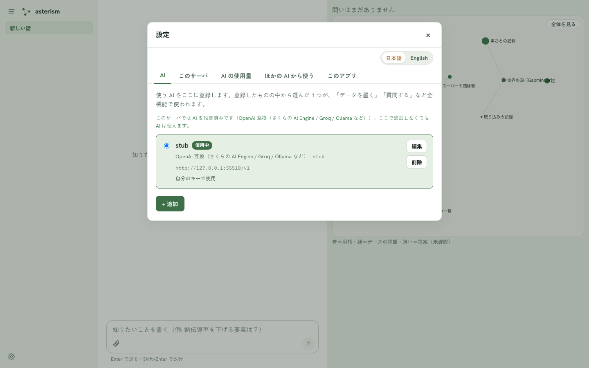

AI の要件
Asterism は、決まった形の JSON を指示どおりに返せる AI を前提にしています。目安は、設定の「適性を調べる」で結果が「推奨」になることです。


Asterism が AI に求める 4 つのこと
| 要求 | 内容 | 適性検査で測れるか |
|---|---|---|
| 形 | 提案を、決まった形の JSON で 1 回で返す（聞き直しなし） | 測れる |
| 振り分け | 1 つの発言を、雑談・質問・提案のどれかに正しく分ける | 測れる |
| 対象の遵守 | 「この用語について」と絞った修正で、対象の外には触れない | 測れる |
| 知識 | 分野の言葉を取り違えない（例: 結晶系と空間群） | 測れない |
適性検査の内容と判定
検査は、同梱の固定の台本（価格表の例）を AI に順に出して、返りを数えます。乱数は使わず、何度やっても同じ問いです。データも話も読み書きしません。
| 検査 | 問い | 合格の条件 |
|---|---|---|
| 形 | 新規の提案 5 問・対象つきの修正 5 問 | 初回の返事が読める |
| 振り分け | 雑談 10・質問 10・提案 10 の計 30 文 | ラベルどおりに分ける |
| 対象の遵守 | 対象つきの修正 5 問 | 対象の外への変更が 1 件もない。変更が 1 件も返らない問も不合格 |
| 判定 | 条件 |
|---|---|
| 推奨 | 形 90% 以上・振り分け 90% 以上・対象 80% 以上 |
| 条件つき | 推奨ではないが、振り分け 70% 以上。形か対象が足りないときは、対象を絞って使うと通りやすい。振り分けだけが足りないときは、会話が提案に混ざることがあるので、指摘は「修正して」と書くと確実 |
| 非推奨 | 上のどちらでもない |
呼び出しは約 40 回で、2〜3 分かかります。落ちた問は番号と種類で確かめられます。
知識は検査で測れません
分野の分類（例: 結晶系と空間群）を混同しない知識は、強いモデルほど確かです。検査が「推奨」でも、分野によっては提案に誤りが出ます。承認の前に確かめてください。提案だけ上位のモデルに分ける使い方を勧めます（設定はまだありません。使用中のモデルを切り替えて使います）。
試した結果
実測したものだけを載せます。まだ載せられる結果はありません。検査の結果を教えていただければ載せます。
関連
検査の押し方は 設定 を参照してください。